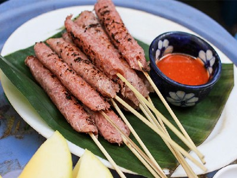

|  |
Food's name: Grilled spring rolls▸ Ingredients:
▸ Time to prepare: 40 minutes ▸ Approx quantity: 10 grilled spring rolls |
▸ Detailed recipe:
- Marinate the ground meat with 1 tablespoon sugar, 1/2 teaspoon pepper, 1/2 teaspoon salt, fish sauce, garlic, minced chili, 1 tablespoon tapioca. Then, you cover it
with food wrap and put it in the freezer for about 40 minutes, so it will help keep the spring rolls from being mushy and chewy.
- Soak pork skin with a mixture of vinegar, salt, and filtered water for about 15 minutes. Next, wash the pork skin with clean water to remove the odor, then boil it until
it is soft, take it out, wash it in cold water, and then cut it into small pieces.
- After the meat is removed from the refrigerator, it is pureed with 10g of hearing. Then add the pork skin and mix well.
- Use food wrap to wrap the mixture into bite-sized, elongated pieces and then refrigerate for about 2 hours for this spring roll to form.
- Then, roll this spring roll in breadcrumbs and then put cooking oil in a frying pan over medium heat until crispy golden brown. When eaten with beans, cucumbers.
- The dipping sauce: Fry minced garlic in a pan and then add a little water until it boils, then add peanut butter, hoisin sauce, and a little sugar. Then pour into a bowl
and mix with the chili sauce.
=> After performing the above steps, you have finished making grilled spring rolls, our next task is to bring it out and enjoy it !
▸ Calories and related information: